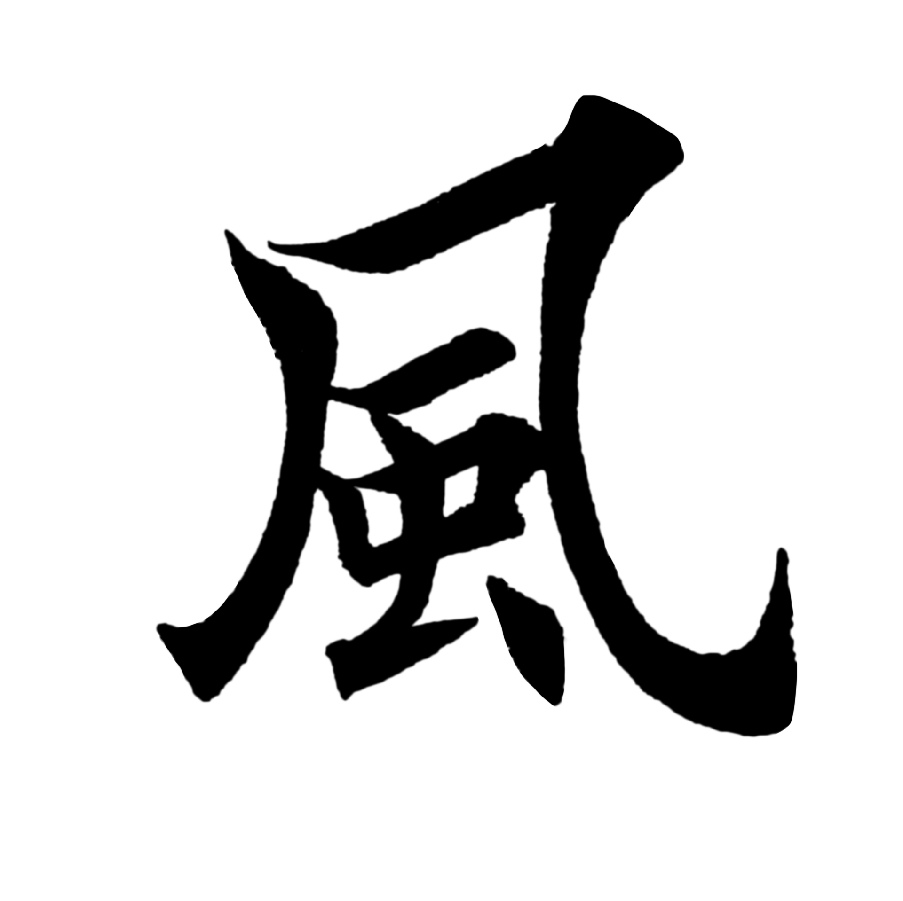
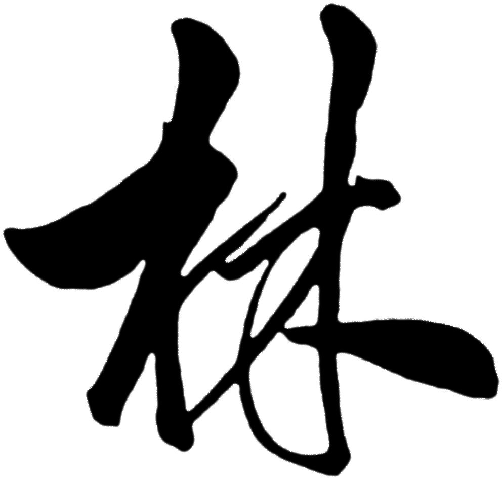
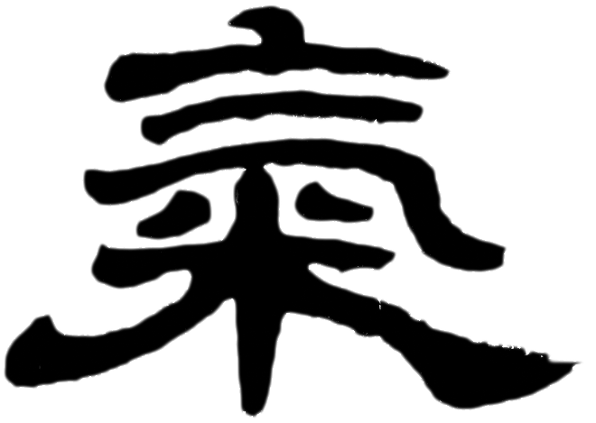

Main Heading
History of Chinese Calligraphy
Chinese calligraphy is the writing of Chinese characters as an art form, combining purely visual art and interpretation of the literary meaning. This type of expression has been widely practiced in China and has been generally held in high esteem across East Asia. Chinese calligraphy and ink and wash painting are closely related: they are accomplished using similar tools and techniques, and have a long history of shared artistry. Distinguishing features of Chinese painting and calligraphy include an emphasis on motion charged with dynamic life. According to Stanley-Baker, "Calligraphy is sheer life experienced through energy in motion that is registered as traces on silk or paper, with time and rhythm in shifting space its main ingredients.



Regular script (traditional Chinese: 楷書; simplified Chinese: 楷书; pinyin: kǎishū; Hepburn: kaisho), also called 正楷 (pinyin: zhèngkǎi), 真書 (zhēnshū), 楷體 (kǎitǐ) and 正書 (zhèngshū), is the newest of the Chinese script styles (popularized from the Cao Wei dynasty c. 200 AD and maturing stylistically around the 7th century).
Semi-cursive script, also known as running hand script, is a style of calligraphy which emerged in China during the Han dynasty (3rd century BC – 3rd century AD). The style is used to write Chinese characters and is abbreviated slightly where a character’s strokes are permitted to be visibly connected as the writer writes, but not to the extent of the cursive style.
The clerical script, sometimes also chancery script, is a style of Chinese writing which evolved from the late Warring States period to the Qin dynasty, matured and became dominant in the Han dynasty, and remained in largely active use through the Wei-Jin periods.
Cursive script (Chinese: 草書; pinyin: cǎoshū), often mistranslated as grass script, is a script style used in Chinese an2d East Asian calligraphy. Cursive script is faster to write than other styles, but can be difficult to read for those unfamiliar with it.